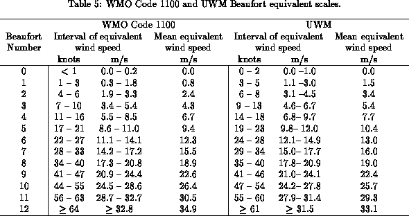

Flag ``WI'' included in each COADS/CMR-5 wind observation is used to discriminate measured from estimated wind speeds. This flag takes only two values: 1 for measured winds and 0 for winds estimated or unknown. It is conceivable that some of the observations flagged as estimated/unknown could in fact be measured (see Cardone et al. [1990] for a discussion of problems with the measured/estimated indicator in a similar data set). In order to homogenize estimated winds we found it necessary to bracket all COADS estimated wind speeds according to the old WMO scale (Table 5) and replace them with the appropriate equivalent wind speeds. To have a good balance between measured and estimated wind speed observations we restricted the analysis to the last two decades (1970-89).

In order to eliminate spatial and temporal noise due to inhomogeneous sampling over the oceans, we have objectively analyzed our fields to fill in gaps in data sparse regions and remove small scale noise. Objective analysis is also effective in outlier removal, which is beneficial to the regression analysis of section 5.3. Details of the objective analysis can be found in section 8 and Levitus (1982).